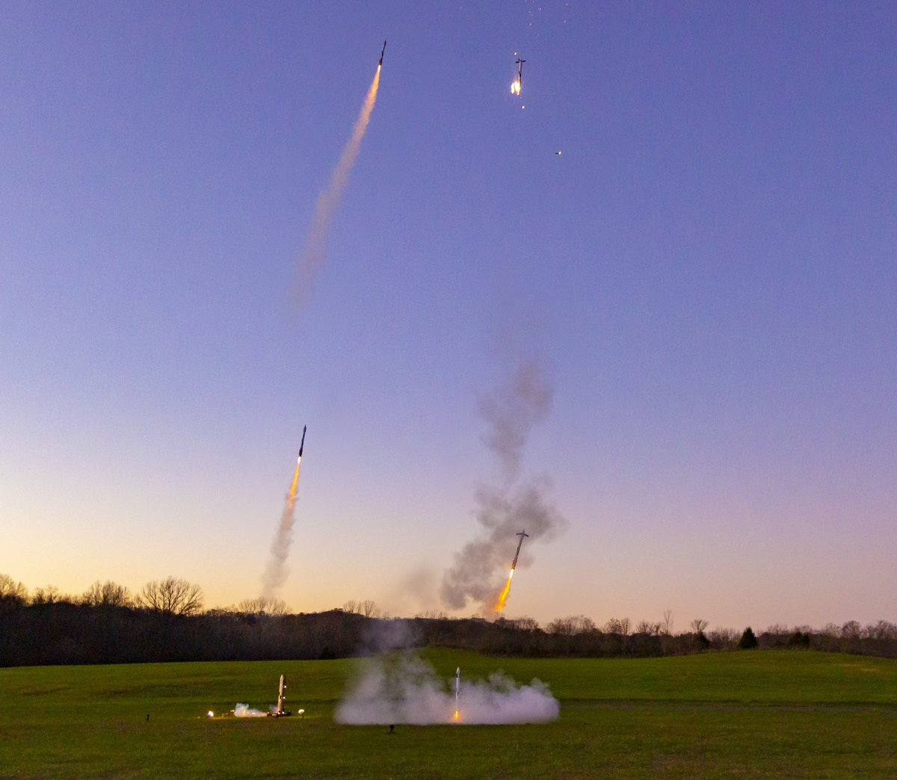

Coheteria Amateur
La coheteria Amateur es una de las mejores
tu puedes construir tus propios cohetes
los mejores coheteros amaterur del mundo para mi son:
- Joe Barnard(Bps Space)
- Rob C (T zero Systems)
- Yukon (Canine Rocket Technologies)
- Charlie Garcia
Ellos son los mejores puesto que han realizado 3 cosas muy importantes
- Han construido cohetes de alta potencia HPR (High Power Rocketry)
- Sus cohetes son muy tecnologicos y unicos, puesto que traen muchos sensores
- Joe Barnard esta creando un intento de aterrizaje con un cohete amateur

__página principal__
__Comparacion__
__SpaceX__
__Blue Origin__
Hecho Por: Juan Fonseca
Colegio El Carmen Teresiano Bogota